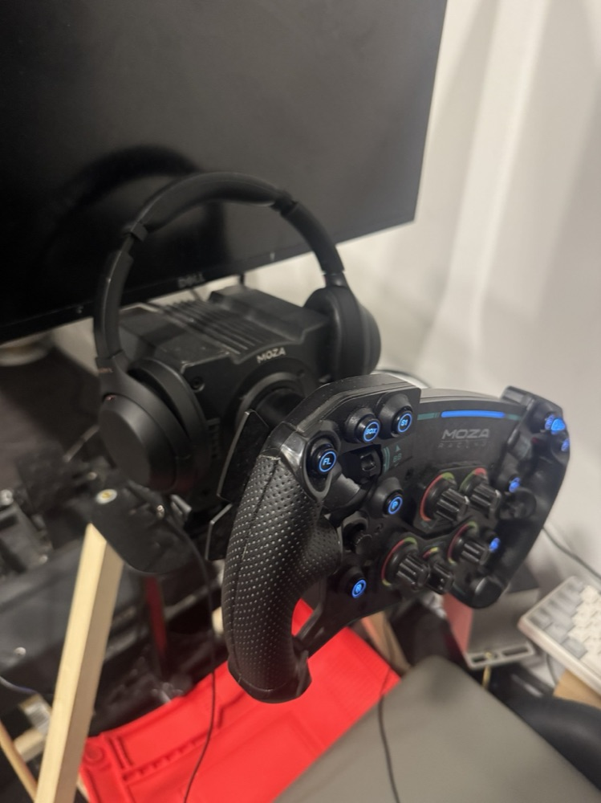
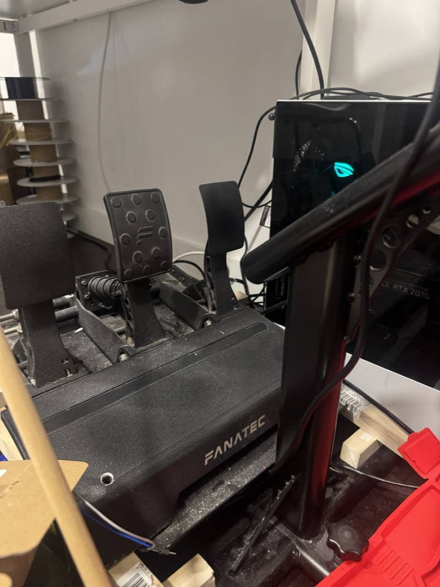

The simulator is currently:
- Moza R12
- Moza GS 1st gen
- Fanatec CSL elite v2
The base Assetto tire physics definitely have weaknesses and 3rd party models only get so much better. The ideal is that a lot of parameters do affect the cars significantly and can be somewhat matched to data logging. The simulator is undeniably helpful for driver improvement. Especially considering the length of time you can spend on it. Long time drivers tend to struggle moving to the sim over sim drivers moving to real cars. I am also an avid iracing player.
I’ve lost a lot of the old Assetto Corsa and Simulator work from a broken hard drive. More will be added here as those will be worked on.

